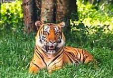
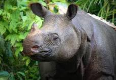
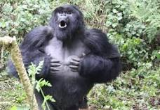
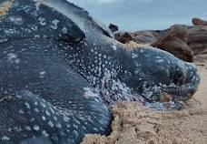

Animales en Peligro de Extinción
Introducción
Los animales en peligro de extinción son especies que enfrentan un riesgo elevado de desaparecer de la faz de la Tierra. Esta situación crítica puede ser resultado de diversas causas, tales como la pérdida de hábitat, la caza furtiva, el cambio climático y la contaminación. La preservación de estas especies es esencial para mantener el equilibrio de los ecosistemas y la biodiversidad del planeta.
Importancia de la Conservación
La conservación de los animales en peligro de extinción no solo protege a estas especies, sino que también asegura la salud y el bienestar de los ecosistemas globales. Cada especie cumple un rol único en su hábitat natural y su desaparición puede causar efectos adversos en cadena. Además, muchas comunidades humanas dependen de la biodiversidad para obtener recursos y mantener su calidad de vida.
Causas de la Extinción
- Pérdida de Hábitat: La deforestación, la urbanización y la agricultura intensiva reducen los espacios naturales donde los animales pueden vivir y reproducirse.
- Caza Furtiva y Comercio Ilegal: Muchas especies son cazadas por su piel, sus huesos, sus cuernos u otras partes, que son vendidas en el mercado negro.
- Cambio Climático: Las alteraciones en el clima afectan los hábitats y las cadenas alimenticias, poniendo en peligro la supervivencia de numerosas especies.
- Contaminación: Los desechos químicos y plásticos, entre otros contaminantes, pueden ser letales para los animales y deterioran sus entornos naturales.
- Especies Invasoras: La introducción de especies no autóctonas puede desequilibrar los ecosistemas y competir por recursos con las especies locales.
Ejemplos de Animales en Peligro de Extinción
- Tigre de Bengala (Panthera tigris tigris): Principalmente amenazado por la caza furtiva y la pérdida de hábitat.

- Rinoceronte de Java (Rhinoceros sondaicus): Con una población extremadamente reducida, enfrenta amenazas de caza y pérdida de hábitat.

- Gorila de Montaña (Gorilla beringei beringei): Amenazado por la caza furtiva, enfermedades y la pérdida de hábitat debido a la agricultura y la deforestación.

- Tortuga Laúd (Dermochelys coriacea): Amenazada por la captura accidental en redes de pesca y la destrucción de sus sitios de anidación.

Tabla de Animales en Peligro de Extinción
| Especie |
Nombre Científico |
Estado de Conservación |
Principales Amenazas |
| Tigre de Bengala |
Panthera tigris tigris |
En peligro |
Caza furtiva, pérdida de hábitat |
| Rinoceronte de Java |
Rhinoceros sondaicus |
En peligro crítico |
Caza furtiva, pérdida de hábitat |
| Gorila de Montaña |
Gorilla beringei beringei |
En peligro |
Caza furtiva, enfermedades, pérdida de hábitat |
| Tortuga Laúd |
Dermochelys coriacea |
Vulnerable |
Captura accidental, destrucción de sitios de anidación |
Esfuerzos de Conservación
- Reservas y Parques Nacionales: La creación de áreas protegidas ayuda a preservar los hábitats naturales de muchas especies en peligro.
- Leyes y Regulaciones: La implementación de leyes que prohíben la caza furtiva y el comercio ilegal de especies es crucial.
- Programas de Cría en Cautiverio: Estos programas ayudan a aumentar la población de especies en peligro y a reintroducirlas en su hábitat natural.
- Educación y Concienciación: Informar al público sobre la importancia de la biodiversidad y las amenazas que enfrentan las especies en peligro puede movilizar el apoyo para la conservación.
Como evitarlo(CLICK AQUI)
me apasiona porque(CLICK AQUI)